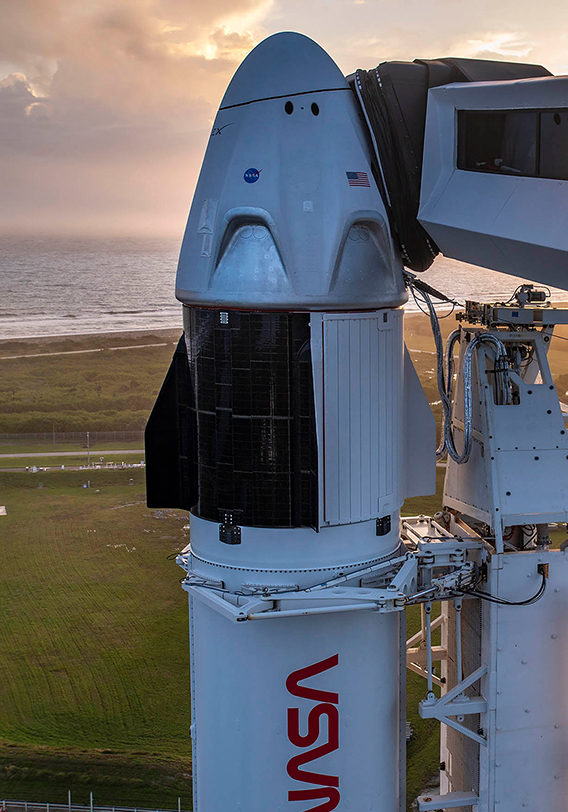

Hello! I am an avid SpaceX fan and I enjoy replicating SpaceX launches in KSP. I am not affiliated with SpaceX in any way, shape, or form (yet). I do not do this for the clout or the subs, but I do it because I love SpaceX and I want to share
entertainment with others. Furthermore, I've acquired an arsenal of knowledge that I want to share with others, so that's why we have a dedicated Discord server for helping people with their various KSP modding needs.
SpaceX and NASA are targeting Sunday, November 15 for Falcon 9’s launch of Dragon’s first operational crew mission (Crew-1) to the International Space Station (ISS) from historic Launch Complex 39A (LC-39A) at NASA’s Kennedy Space Center in Florida. The instantaneous launch window opens at 7:27 p.m. EST on November 15, 00:27 UTC on November 16. Following stage separation, SpaceX will attempt to land Falcon 9’s first stage on the “Just Read the Instructions” droneship, which will be stationed in the Atlantic Ocean. The launch webcast will go live about 4 hours before liftoff. Tune in here to watch live.
As part of the Commercial Crew Program, NASA astronauts Mike Hopkins, Victor Glover, Shannon Walker, and JAXA astronaut Soichi Noguchi will fly aboard Dragon on its first six-month operational mission to the ISS.
Following Dragon’s second demonstration mission (Demo-2), NASA certified SpaceX for operational crew missions to and from the space station. Crew-1 is the first of three scheduled Dragon flights over the course of 2020 and 2021.
The return of human spaceflight to the United States with one of the safest, most advanced systems ever built is a turning point for America’s future space exploration, and it lays the groundwork for missions to the Moon, Mars, and beyond.
SpaceX - KSP gives you the ability to see every aspect of a SpaceX mission using a simulation.
We use a game called Kerbal Space Program to recreate SpaceX missions. The game is very versatile, allowing us to recreate all types of missions with very high detail.
If you would like to contact us or see more info about us, you can do so by using one of the social platforms listed below, all for free.
{kind=link}